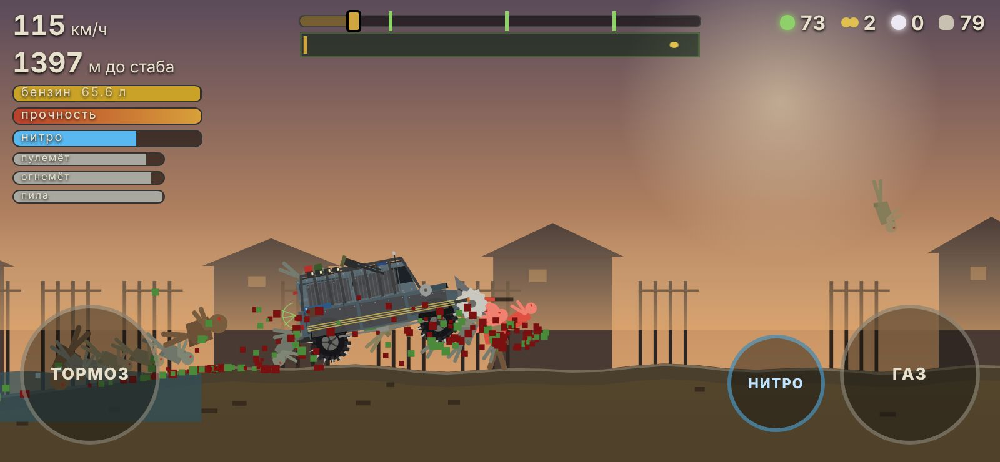
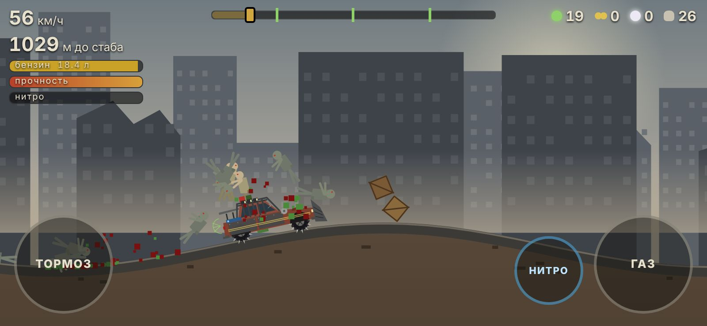
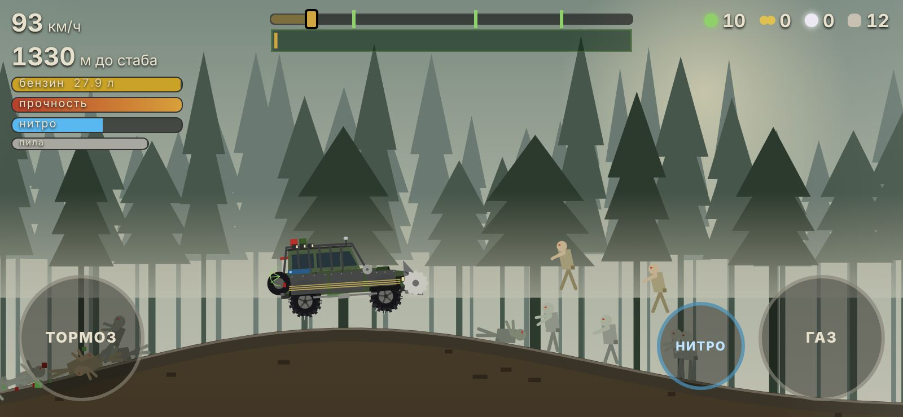
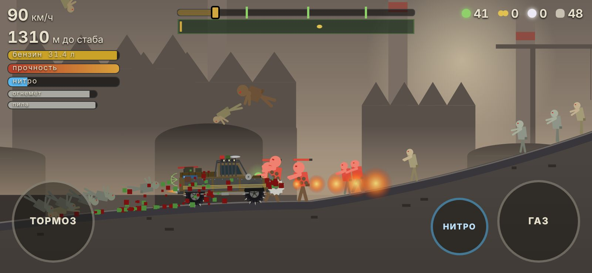
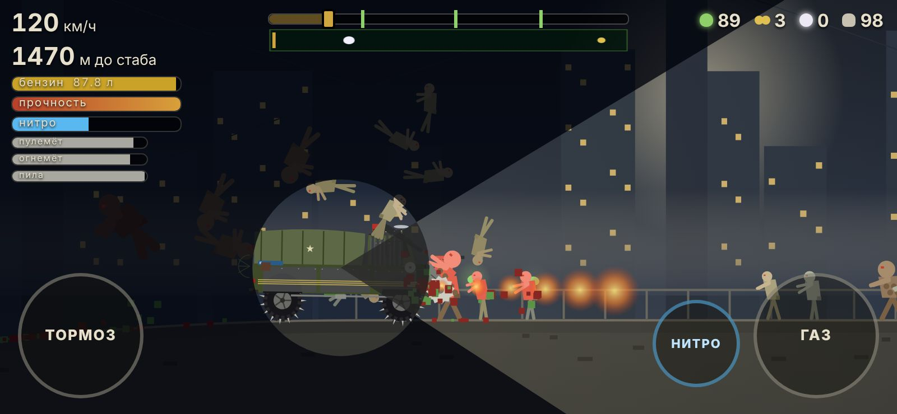
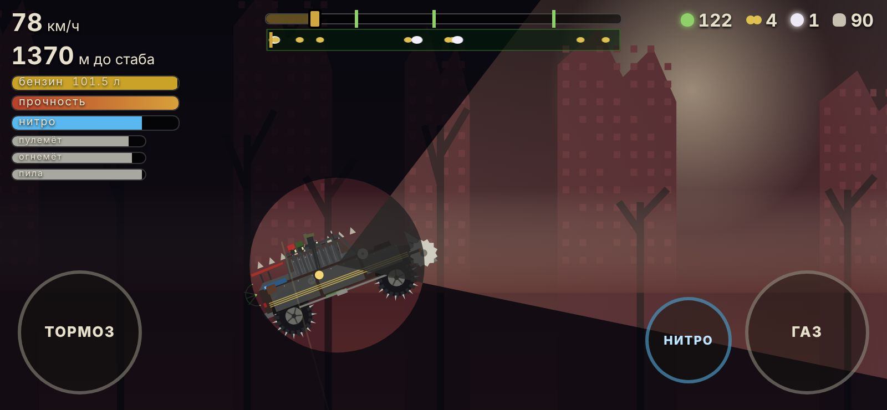
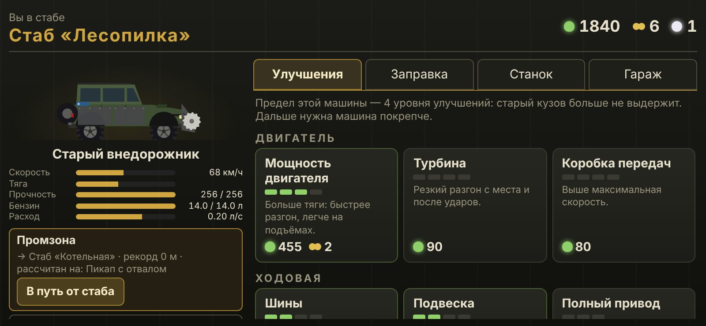

Стикс: Дорога стабов
Гонка на выживание по мотивам мира «Стикс» Артёма Каменистого. Прорвитесь на машине от стаба к стабу через кластеры Улья, давите заражённых, собирайте спораны и превращайте ржавый седан в рейдерский броневоз.

Как установить
Игры нет в Google Play, поэтому Android один раз спросит разрешение на установку. Это займёт минуту.
- Скачайте файл на телефонНажмите «Скачать APK» на этой странице. Если вы за компьютером — наведите камеру телефона на QR-код.
- Откройте скачанный файлИз уведомления о загрузке или из папки «Загрузки» (Download). Файл называется
styx-road.apk. - Разрешите установкуЕсли появится «Установка заблокирована» — нажмите «Настройки» и включите «Разрешить из этого источника» для браузера или файлового менеджера, затем вернитесь назад.
- Нажмите «Установить»Если Play Защита предупредит о неизвестном приложении — нажмите «Подробнее» → «Всё равно установить».
- Запустите «Стикс: Дорога»Игра откроется во весь экран и горизонтально. Кнопка «Назад» ставит заезд на паузу.
Как обновить игру
Скачайте новую версию с этой страницы и установите поверх старой — прогресс, машины и улучшения сохранятся.
Пишет «Приложение не установлено»
Обычно это значит, что на телефоне стоит сборка с другой подписью. Удалите старую версию игры и установите заново (прогресс старой версии при этом сотрётся). Ещё проверьте, что хватает свободного места.
Это безопасно?
Игра собирается автоматически из открытого исходного кода на GitHub. Ей не нужны контакты, файлы, камера или местоположение: в списке разрешений только стандартный доступ к сети, который есть у всех приложений на этом движке, а сама игра в интернет не ходит. Предупреждение Android появляется для любых приложений не из Google Play.
Откройте сайт на телефоне: наведите камеру на код и скачайте игру прямо оттуда.
Об игре
2D-вид сбоку, физика машины на подвеске, всё нарисовано кодом. Каждый заезд — рывок до следующего стаба, пока не кончится бензин или прочность.
Город, лес, промзона, деревня, мост через реку ночью и окраина мёртвого кластера с элитой в конце.
От ржавого седана до рейдерского броневоза. У каждой свои улучшения — и все они видны на кузове.
Пустыш, бегун, лотерейщик, топтун, рубер и элита. Сильные мутанты дают горох и жемчуг.
Двигатель, броня, таран, нитро, бак, пулемёт, огнемёт, пила и особые — лебёдка, шноркель, мины.






Между заездами — стаб
- Улучшения: мощность, подвеска, броня, оружие и многое другое.
- Заправка и станок: бензин покупается за спораны, оружие без патронов чинится на станке.
- Гараж: новые машины за спораны, горох и жемчуг.
- Чекпоинты: следующий заезд можно начать с дальней точки.
Управление
Оружие на машине стреляет само — ваше дело дорога.
На телефоне
- Справа — газ. Отпустили — машина тормозит сама.
- Слева — джойстик наклона: влево — нос вверх, вправо — нос вниз. Чем дальше палец, тем сильнее. В полёте выравнивает машину, на земле слегка качает кузов.
- Задний ход: остановитесь и уведите джойстик до упора влево.
- «Нитро» — рывок, пока не опустеет баллон.
- «Назад» — пауза.
В браузере на компьютере
- ↑ или W — газ
- ← → или A D — наклон назад и вперёд (стоя, ← — задний ход)
- Пробел — нитро, Esc — пауза
- Прогресс в браузере хранится только в этом браузере.
Ещё одна игра: Клоны против дроидов
Пошаговая 3D-тактика про отряд клонов: фрегат на орбите, высадки на три планеты, наём бойцов, снаряжение и исследования.

- 6 сюжетных операций и патрули за кредиты.
- 4 класса бойцов, от 4 до 6 клонов в отряде, звания и раскраска брони.
- 5 видов дроидов — от B1 до коммандос BX.